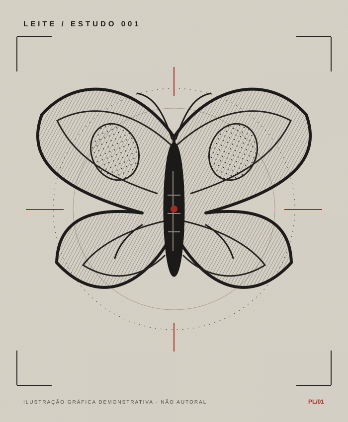

CASO 001 / CURIOSIDADE✳
ANIMAIS NA PELE
HÁ MILÊNIOS
Exames de infravermelho revelaram figuras de animais tatuadas em uma múmia de Gebelein, no Egito pré-dinástico.
FONTE / BRITISH MUSEUM ↗ARQUIVO 001 / ARTISTA EM FORMAÇÃO
Desenho, cultura nerd e disciplina de treino. Sou Paulo Leite — Leite nas artes. Estou construindo uma linguagem de mini realismo black & grey com animais, esculturas e símbolos.
ARTISTA EM FORMAÇÃO · SEM ATENDIMENTO OU AGENDA DE TATUAGEM

Quero mostrar o caminho inteiro: tentativa, erro, revisão e próximo exercício. Os registros abaixo só aparecem quando eu publicar algo real; a rotina mais recente está no Instagram.
Abrindo arquivo de evolução...
O portfólio também é um arquivo de curiosidades. Cada caso liga cultura visual ao que observo para desenhar melhor.
Exames de infravermelho revelaram figuras de animais tatuadas em uma múmia de Gebelein, no Egito pré-dinástico.
FONTE / BRITISH MUSEUM ↗Na escultura, a luz revela planos, dobras e textura. A peça do The Met é uma referência de observação, não uma obra minha.
ACERVO / THE MET ↗As folhas de desenhos mostram motivos e estilos de épocas diferentes. Estudá-las ajuda a pensar composição e repertório.
ACERVO / THE HENRY FORD ↗03 / ROTA DE TREINO
Como corrida e boxe, desenho exige constância. Este mapa descreve o que quero estudar; não marca etapas como concluídas.
Separar claro, médio e escuro antes dos detalhes.
Estudar forma, pelo e penas em pequena escala.
Observar planos, fissuras e dobras.
Criar composições e comparar tentativas.
04 / QUEM ASSINA
Sou curioso por mundos de fantasia, ficção científica e anime. Gosto de investigar detalhes, montar repertório e voltar ao treino até entender melhor uma forma. Fora da arte, corrida e boxe reforçam a disciplina que quero trazer para o desenho.
Minha direção é mini realismo preto e cinza de animais, esculturas e elementos simbólicos. Este site apresenta meu processo com o cuidado de uma identidade profissional, enquanto construo experiência. Ainda não ofereço tatuagens, orçamento ou agendamento.
ACOMPANHAR PAULO NO INSTAGRAM ↗